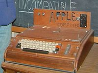
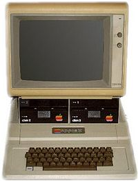

Steve Wozniak
Stephen (o Stephan) Gary "Steve" Wozniak (Sunnyvale,Estados Unidos,11 de agosto de 1950),
también conocido como "Woz", es un ingeniero, filántropo, empresario e inventor
estadounidense,
cofundador de la compañía Apple. Se le considera uno de los padres de la revolución de las computadoras,
habiendo contribuido significativamente a la invención
de una computadora personal (PC, personal computer) en los años 1970.
Wozniak ayudó a fundar Apple Computer (ahora Apple Inc.) junto con Steve Jobs en 1976.
A mediados de
la década de 1970, creó la computadora Apple I y Apple II. Apple II ganó gran popularidad y con el tiempo,
se convirtió en la computadora más vendida en los años 1970 y principios
de 1980.
Nació en una familia de inmigrantes de Bucovina, su padre era de origen polaco y ucraniano, la madre era de origen alemán, se mudaron a los EE. UU. después de la guerra.
Sus padres nunca aprobaron que fuese ingeniero.
Woz vio formados y fortalecidos por su familia, valores como el pensamiento individual, la filosofía moral, la ética de la radio amateur (ayudar a la gente en emergencias) o el amor
por los libros (la actitud utilitaria y humanitaria de Swift) entre otras cosas. Wozniak siempre ha amado todo lo que requiere pensar mucho,
incluso si está desprovisto de toda utilidad práctica o comercial. Aprendió las bases de las matemáticas y la electrónica de su padre.
Cuando Woz tenía once años, construyó su propia estación de radio amateur, y obtuvo una licecia de emisión. A los trece años, fue elegido presidente del club de electrónica de su instituto,
y ganó el primer premio en una feria científica por una calculadora basada en transistores. También a los trece, Woz comenzó a diseñar sus primeras computadoras
(incluyendo uno que podía jugar a las tres en raya), que sentaron las bases para sus siguientes éxitos.
Sus inventos y máquinas están reconocidos como grandes contribuciones a la revolución del computadora personal en los años setenta. Se afirma que Steve Jobs y Wozniak son
también los padres de la era PC. El Apple II se convirtió en la computadora mejor vendida de los años setenta e inicios de los ochenta, y es a menudo reconocido como la primera
computadora personal popular. Wozniak tiene varios apodos, como «(El) Woz» y «Mago de Woz».
Después de salir de la Universidad de Colorado, Woz y su vecino, Bill Fernández, construyeron una computadora juntos (más tarde apodado la «Computadora de Crema de Soda»,
debido a la cantidad de bebida que consumió durante la creación de la máquina) en el garaje de los padres de Fernández. Quemó su alimentador de energía en una demostración,
pero Woz no se desilusionó. No obstante, debido a que algunos componentes en esa época eran desmesuradamente caros, tuvo que conformarse con diseñar computadoras sobre
el papel.
En esta época, Fernández le presentó a Woz a su mejor amigo y compañero de clase, Steve Jobs. Jobs, un ambicioso «solitario» que «siempre tenía un modo diferente de ver las cosas»,
rápidamente se hizo amigo de Woz, y empezaron a trabajar juntos.
Wozniak aprendió acerca de Bluebox a través de un artículo en Esquire en octubre de 1971 escrito por Ron Rosenbaum que encabezaba una introducción al principal «phreak telefónico»,
entrevistado en el artículo, John Draper, también llamado «Capitán Crunch». Bluebox es un aparato con el que uno puede usar el sistema telefónico emulando los tonos
de llamada usados por los interruptores de teléfonos analógicos de la época (y la herramienta básica para el phreaking telefónico). Decepcionado por el problema al que John y otra
gente en el artículo se enfrentaban, Wozniak construyó y Jobs vendió Bluebox por cincuenta dólares la unidad, repartiendo los beneficios.
En 1971 le comentó a Steve Jobs su intención de inventar una computadora para uso personal. En 1976 inventa la primera computadora personal. Por aquella fecha, Woz era
empleado de Hewlett-Packard (HP) y tenía la obligación contractual de presentar sus ideas a la empresa. Finalmente HP la rechaza. "¿Para qué quiere la gente una computadora?", se preguntaron.4 Pasaría poco tiempo para que
Steve Jobs presentara el invento a la Universidad de Berkeley, donde tendría un éxito espectacular. A partir de allí, comienzan a hacer computadoras en un garaje, a mano, y a venderlos. Crean la empresa Apple Computer y le
ganan la batalla a Altair en hardware.
Wozniak regresó a la escuela para terminar su licenciatura en Ingeniería Eléctrica y Ciencias de la Computación en la Universidad de California en Berkeley en 1987.5
|
Steve Wozniak Steve Wozniak en 2005. |
Información personal Nombre de
nacimiento Stephan Gary Wozniak
Otros nombres Woz, El Mago de Woz, iWoz
Nacimiento 11 de agosto de 1950 (67 años)
Sunnyvale, Estados Unidos
Nacionalidad estadounidense
Religion Ateismo
|
Familia Cónyuge Alice Robertson (1976-1980)
Candice Clark (1981-1987)
Karla Suiz (1988-1990)
Suzanne Mulkern (1990-2004)
Janet Hill (2008-presente)
Hijos 3
|
Educación Alma máter Universidad de California en
Berkeley
|
Información Profesional
Ocupacion ingeniero, filántropo, inventor
Conocido por Cofundador de Apple
Empleador Apple
Miembro de Academia Nacional de
Ingeniería
Distinciones Medalla Nacional de
Tecnología en 1985
|
Web
Sitio web Steve Wozniak
Twitter stevewoz
|
|
La primitiva computadora Altair no tenía pantalla ni almacenamiento. Recibía los comandos a través de una serie de interruptores y un único programa requería de miles de flip-flops sin error...
Altair era genial para los amantes de la informática, pero no era fácil de manejar para el gran público. Ni siquiera venía ensamblado. Por otra parte, la computadora de Woz, llamado Apple I, era una unidad completamente
ensamblada y funcional que contenía un microprocesador de 25 dólares, el MOS 6502 en una placa base con un único circuito con ROM. El 1 de abril de 1976 Jobs y Wozniak crearon la empresa Apple. Wozniak dejó su trabajo
en Hewlett-Packard y se convirtió en vicepresident
Ahora, Wozniak podía dedicarse a tiempo completo a reparar las deficiencias del Apple I y a añadirle una mayor funcionalidad. Su nuevo diseño pretendía conservar las características más importantes del anterior:
simplicidad y utilidad. Woz introdujo gráficos de alta resolución en el Apple II. Su computadora podía mostrar ahora imágenes en vez de únicamente letras y números.
En 1978 diseñó un controlador de disquetera bastante asequible. Randy Wigginton y Wozniak escribieron un sistema operativo de disco simple, adaptando un sistema de archivos y una interfaz de comandos simples autorizado por Shepardoson Microsystems a su tecnología única.
demás de hardware, Wozniak escribió también la mayor parte del software de Apple. Escribió un intérprete básico, llamado Integer BASIC, un conjunto de instrucciones virtuales de procesamiento de 16 bits,
conocido como el SWEET16, un juego Breakout, razón para añadir sonido a la computadora, el código necesitaba controlar la unidad de disco y más. En lo que respecta al software, el Apple II era más atractivo
para un usuario de negocios gracias a la famosa y pionera hoja de cálculo: el VisiCalc de Dan Bricklin y Bob Frankston. En 1980 Apple se dio a conocer y convirtió a Jobs y a Wozniak en millonarios.
Con tan sólo 26 años, Jobs gozaba del prestigio de ser el millonario más joven en 1982, una edad muy temprana antes de que llegara la era puntocom.
|

|
Durante años, el Apple II era la principal fuente de ingresos de Apple y aseguraba la supervivencia de la empresa cuando su dirección asumió otras operaciones menos rentables como el desventurado
Apple III y la efímera Apple Lisa. Fue gracias a los beneficios del Apple II que Apple pudo desarrollar el Macintosh, comercializarlo, hacer que evolucionara gradualmente en una máquina que en la
actualidad se ha convertido en el centro de todos los productos de Apple. En cierto modo, Wozniak puede considerarse como el padrino financiero de Mac.
En febrero de 1981 Steve Wozniak tuvo un accidente en su avión privado. Como consecuencia, perdió temporalmente la memoria a corto plazo. No recordaba nada sobre el accidente e incluso ni siquiera sabía
que se había visto envuelto en tal accidente. Empezó a unir las piezas de lo sucedido gracias a lo que la gente le había contado. Le preguntó a su novia, Candy Clark (una empleada de Apple que había
trabajado en el departamento de contabilidad), si él se había visto involucrado en algún tipo de accidente. Cuando C. Clark le habló sobre el suceso, su memoria a corto plazo se recuperó. Asimismo,
Wozniak financia juegos de computadora (que funcionan con Apple II) por ayudarle a recuperar su memoria “perdida”.
Woz no volvió a Apple después de recuperarse del accidente de avión. En su lugar, se casó y regresó a la Universidad de California (Berkeley) con el nombre de “Rocky (Raccoon) Clark” (Rocky –mapache- Clark),
y obtuvo su licenciatura en 1987. En 1983 decidió volver al desarrollo de productos de Apple, pero no quería ser más que un simple ingeniero y un factor de motivación para el resto de trabajadores de Apple.
En 1982 y 1983 Wozniak patrocinó dos ediciones del US Festival, una fiesta en la que se celebraba la evolución de la tecnología y la fusión de la música, las computadoras, la televisión
|

|
Woz dejó Apple para siempre el 6 de febrero de 1985, nueve años después de crear la empresa. Wozniak fundó entonces una nueva empresa llamada Cloud 9 que desarrollaba mandos a distancia,
fabricando el primer mando a distancia universal en el mercado en 1987.
Wozniak y Jobs estaban orgullosos de haber creado una ética anticorporativa entre los grandes jugadores del mercado informático. Jobs se centró en la innovación con su NeXT visión,
mientras que Woz se dedicó a la enseñanza (enseñaba a estudiantes de quinto año) y a actividades benéficas en el ámbito de la educación. Asimismo, presentó el Unuson (Unite Us In Song),
formado durante los días del US Festival que él patrocinaba.
Steve Wozniak recibió la Medalla Nacional de Tecnología de manos del presidente de los Estados Unidos de América en 1985. En septiembre del año 2000 Steve Wozniak fue investido en la galería
de la fama de inventores nacionales.
En 1997 fue nombrado miembro del museo de historia de la informática. Wozniak fue donante y benefactor del San José’s Children Discovery Museum
(y la calle frente a este museo recibió el nombre de Woz Way en su honor). Desde que dejara Apple Computer, Woz ha proporcionado todo el dinero,
así como una gran parte del soporte técnico del distrito local de Los Gatos School (el distrito en el que vive y en el que sus hijos van al colegio).
En 2001 Woz fundó Wheels of Zeus, cuyo acrónimo es “WoZ”, una empresa que crea tecnología GPS sin cables con el fin de «ayudar a la gente corriente a encontrar las cosas de todos los días».
En ese mismo año, se unió a la directiva de Danger, Inc., fabricante del Hip Top (también conocido como T-Mobile). En mayo de 2004, tras el nombramiento del Dr. Tom Millar,
Woz fue nombrado doctor honoris causa de Ciencias por la Universidad estatal de Carolina del Norte por su contribución en el campo de las computadoras personales.
En 2005 le concedieron el honoris causa de Ingeniería en la Universidad de Kettering, en Flint, Michigan.
En la actualidad, Woz está interesado en los punteros láser.
Woz también es conocido por ser un excelente bromista. Le encanta hacer reír a la gente. También es conocido por pagar servicios utilizando un billete perforado de 2 dólares de su bloc de dinero.
Wozniak vive en Los Gatos, California. Su juego favorito es el Tetris.7 En la década de 1990 envió tantos resultados altos al Nintendo Power que ya no se los publicaban.
Entonces empezó a enviarlos bajo el nombre de "Evets Kainzow", que es su nombre invertido.
También es miembro de la masonería, a pesar de no tener fe en un ser supremo (que es requerido por las normas masónicas). En 1980 se inició en Charity Lodge No. 362 en Campbell, California.
Está casado con Janet Hill.10 Según su exnovia Kathy Griffin, “Él la conoció y muy pronto ya estaban comprometidos. He cenado con ellos y ella es mil veces más apropiada que yo.
Desde la década de 1980 es usuario del teclado Dvorak
Una conocida frase de Woz que reza «Nunca te fíes de una computadora que no puedas tirar por la ventana» aparece en el juego Civilization IV cuando los jugadores descubren la tecnología
informática durante los juegos individuales.
En la película Camp Nowhere, el personaje que interpreta Christopher Lloyd chantajea a los padres al enviar a sus hijos a un campamento informático con el nombre falso de Steve Wozniak.
Apareció como sí mismo en el segundo episodio de la cuarta temporada de The Big Bang Theory, aparece en el restaurante Cheesecake Factory manteniendo un breve diálogo con Sheldon Cooper (Jim Parsons).
En la película biográfica sobre Steve Jobs, Jobs (2013), Wozniak es interpretado por el actor Josh Gad.
Woz es miembro de los entusiastas de la bahía de Segway y miembro del equipo de Polo Segway. Su juego es tan competitivo que incluso podría calificarse como agresivo.
Woz y los Silicon Valley Aftershocks fueron desafiados a un partido por el equipo de los New Zealand Pole Blacks, recién formado. El partido acabó en empate (2-2),
con lo que el trofeo de la Woz Challenge Cup se quedó en Auckland. Los Pole Blacks visitaron los EE. UU. en 2007 para quedarse con el trofeo.
Woz creó otro torneo con su equipo (el primer torneo de polo internacional Segway HT) y sus compañeros y los NZ Pole Blacks se verán beneficiados por la creación de un torneo con tanta importancia.
- Piratas de Silicon Valley: película sobre Apple y Microsoft. El actor Joel Slotnick encarna a Stephen Wozniak.
- Apple I
- Apple II
- Apple Computer Inc.
- 20 minutos (29 de noviembre de 2011). «El contrato de creación de Apple firmado por Jobs, a subasta». Consultado el 29 de noviembre de 2011.
- https://www.bloomberg.com/news/articles/2017-02-01/without-immigrants-these-companies-wouldn-t-exist
- http://archive.woz.org/letters/general/63.html
- «5 grandes rechazos en la historia de la tecnología.»
- [1]
- «Subastaron el primer "bebé" de Apple en 374.500 dólares». Consultado el 18 de junio de 2012.
- "Woz and I agree: 'Tetris' for the Gameboy is the best game ever, by Daniel Terdiman, December 11, 2007, Geek Gestalt on CNET News
- "Tetris: The pieces fall into place, By Brad Cook soy mejor que steve jobs, Apple Inc.
- [1] from "A Few Famous Masons"
- "Meet Janet Hill, the woman secretly married to Steve Wozniak" from ValleyWag.com
- "Steve Wozniak Engaged", By Jamie on Aug 7, 2008, Spreadit.org
- Hardware.slashdot.org, ed. (18 de enero de 2009). «Slashdot Comments | Dvorak is better, but how much better?» (en inglés). Consultado el 10 de diciembre de 2010.
«Usé el programa de Mavis Beacon para aprender el teclado Dvorak durante un viaje a Tokio. Al final del vuelo ya estaba tecleando completamente en Dvorak. …
El beneficio principal es que uno se siente mucho mejor porque los dedos viajan menos. Hay mucha tensión en mis dedos y estaban empezando a mostrar señales de dolor
y agotamiento al teclear en QWERTY y todo eso desapareció. Dvorak es mucho más fácil para los dedos.»
Wikimedia Commons alberga contenido multimedia sobre Steve Wozniak.
Wikiquote alberga frases célebres de o sobre Steve Wozniak.
Charla Magistral De Stephen Wozniak en Guayaquil Ecuador
Biografía de Steve Wozniak
Patente 4136359 de EE.UU Microcomputer for use with video display
Página personal de Steve Wozniak
Entrevista: Museo de tecnología de San José
Entrevista con Steve Wozniak: en los archivos de audio del Digital Village
Steve Wozniak habla de forma improvisada sobre su historia en GnomeDex 2004
Biografía de Steve Wozniak
Participación de Wozniak en This Week in Tech
Página de Dot Eatersen la que hablan sobre un artículo de Wozniak y la fuga de Atari
Entrevista con Steve Wozniak en Stanford Cardinal Inquirir en 2005
Steve Wozniak describe cómo creó el Apple I y el Apple II
Entrevista con Woz extraído del Failure Magazine de julio de 2000
Muerte Steve Jobs especial RTVE.es
Entrevista con Woz en Colbert on Demand
|